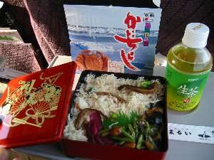
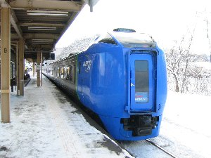
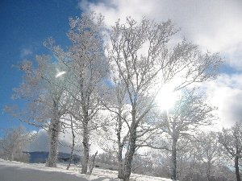
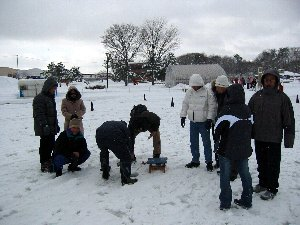
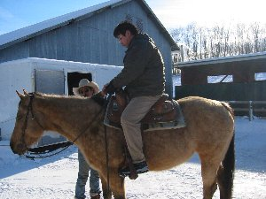
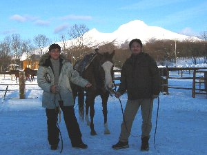

北海道、雪と戯れよう | ２００４年１月２４〜２６日 |
|---|---|
| 北海道シリーズも、此処に書いてあるだけで４シリーズ目になりました。今回も冬の北海道満喫です。 今回の目的地は「大沼公園」です。大沼とは函館から北に２５㎞位の所です。 千歳の友人と合流し、土曜日の朝千歳から大沼に向かいＪＲに乗りました。驚くことに主要路線のはずですが、列車は１時間に１〜２本（空港行きは別）。しかも半分以上が特急です。本日は「特急スーパー北斗６号」に乗車。 乗車して直ぐ朝食の駅弁「かにちらし」を頂く。美味しい。 | |
|  カニちらし弁当〜！箱まで豪華！ |  これが特急スーパー北斗６号。大沼公園駅にて |
| この辺の鉄道は一部区間しか電化されて無く、列車は当然ディーゼル機関。ガラガラと少しうるさい。しかし、列車の旅はとても快適です。お昼前には大沼公園駅着。 半日しかないけど函館七飯（ななえ）スキー場にてスキーをする。このスキー場は景色がバツグンに良いです。ゲレンデが駒ヶ岳に向かっているので、滑りながら雪を頂いた駒ヶ岳と海と、海の向こうの室蘭が見えます。 最近雪が降ったと言っていたので、雪質も良く快適に滑れました。まあ、上級者コースは無いので中級クラスの人にお勧めですか。 | |
 目の前の山が駒ヶ岳。右側が海です |  ゲレンデ脇の樹氷 |
| 今回の宿は、民宿「山一荘」。民宿なので期待していなかったが、その期待通り（つまり・・・・）の宿でした。泊まり客は私達だけ。此処に来るまで北海道の家は、何処の家でも家中暖房がされていると思ったが、違っていました。 まあ、宿の造りは置いておいて。おじさんはすごく親切な人で、スキー場の送り迎えまでやってくれました。その上、「家にも風呂は有るけど、温泉の方が良いでしょう。温泉に連れて行ってあげるよ」と、日帰り入浴施設「ユートピア大沼」（車で１５分）に連れて行ってもらい、お金まで払って貰いました。 「ユートピア大沼」は、こぢんまりとした内湯が一つしか無い所ですが、空いていて（と言うか他に人居なかった）のんびりして良かったです。 宿の食事は、おじさんが元々仕出し屋をやっていたと言うのですから、悪いはずは有りません。お腹一杯食べました。朝もお腹一杯です！ この宿、一泊二食付きで6000円（暖房費、税別）です。安いね。ホンット安い。 | |
|  ワカサギ釣りの現場 周りを台湾人に囲まれた〜〜！ |  足下のワカサギ見えます？ |
| 次の日、午前中大沼にてワカサギ釣りをやります。前から一度ワカサギ釣りをしてみたくて、やっとチャレンジ出来ました。 ２時間500円で、竿、餌付きでやらせてもらえます。あらかじめ穴が掘って有り、係りのおじさんがやり方を教えてくれます。仕掛けを一回池のそこまで降ろし、ちょっと引き上げる位が良いポイントだそうです。おじさんは「釣れたら良いな」なんて言っています。（釣れないのか？） この大沼は台湾からの観光客が多く、至る所で雪と戯れる台湾人を見かけます。私達が氷の池に陣取り、穴に糸を垂らすと、珍しいのか台湾人が集まってきました。友人は取り囲まれて写真を撮られています。何か釣り上げなければならない感じです。 しばらくして、以外にも私の竿に引っかかりました。ワカサギ釣りは、竿の先端をジーと見て、ピクピクって動いたら仕掛けを急いで引き上げ、針に引っかけると言うものです。（たぶん） まずは一匹ゲット！嬉しいです！いつも「釣れない釣り」を実施していた私が、食べられる魚を釣りました。その後、友人が４匹、私が４匹と計８匹のワカサギを釣りました。一番大きいのは私！！（滅多に無いことなので、自慢しておこう！） 食べられる魚を釣ったからには、食べなくては！ 宿でこの日の夕食の一品にして頂きました。ワカサギ天ぷら。 ・・・美味いね。身がオクホクしていて。あー、シァーワセ！ | |
 釣ったワカサギを天ぷらに。 |  まずは馬とのふれあい。この子がジェニスパー（？） |
| 話が前後しましたが、この日の午後は乗馬にチャレンジ！馬に乗ったことが無いので、是非雪の中で乗馬をしたかった。初心者大歓迎の「サニーズステーブル」でお世話になる。送迎もあったし。 初めに馬の操作方法を習い、実際に乗ってみる。初めはびくびくモノです。私の乗った馬は「ホープ」と言う名前です。ホープがブルルン！と首を振るわすだけで『おおっ！！』ってな感じです。手綱は一時でも手を離せないので、写真が撮れず乗馬の写真は少ないです。 牧場を出て、道路を横切り、近くの畑の方まで歩いていきます。 ホープは前の馬のお尻１０㎝の所をピッタリくっついて行きます。ほとんど私が操作しなくても良いくらい。 この時、近くで狐狩りをやっていました。狐も多すぎて害獣扱いです。 鉄砲がバーン！と打たれると、ホープはビクッと首を巡らせ、耳がピクピクします。音に敏感のようです。前を行く友人の馬ジェニスパー（だったか）はホープの鼻先に、うんこをボトボト落とすのに。（鼻先１０㎝なんだから気を付けてよ〜。ホープもそれを踏まない！） 雪の中での乗馬は快適です。楽しいです。今回は一番短い４５分コース（5000円也、実際には１時間以上乗っていたような・・）でしたが、今度はもっと長いコース（２時間半とか）にチャレンジしたいです。この牧場も、とってもアットホームでお勧めです。 最終日は途中下車して、登別温泉に行きました。超デカイ露天風呂が有るという「まほろば」に行ったのですが、日帰り入浴は出来ないそうで。残念です〜。かがり湯さんにお世話になり、登別の白濁の温泉に浸かってきました。 | |
 駒ヶ岳をバックに。 |  競馬の優勝場の様にホープと記念写真 |
コメント＆写真 ｂｙ べっしー ＞ちょこっと裏話 | |